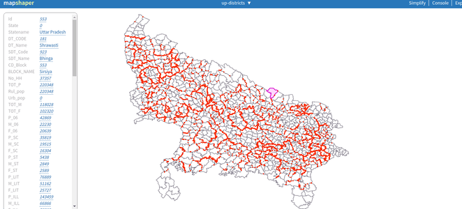
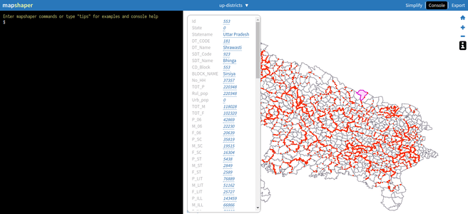
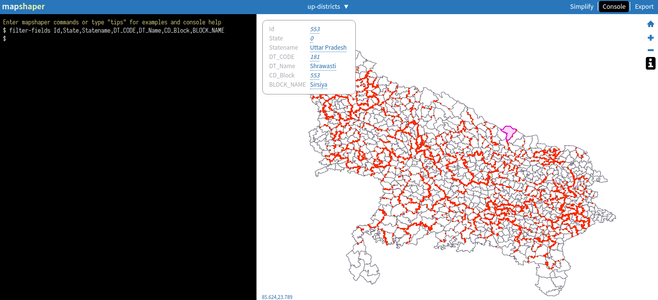

<ol>
  <li class="p-2">Go to <a href="http://mapshaper.org">mapshaper.org</a></li>
  <li class="p-2">Load your region's <code>GeoJSON</code>. In this example, we use the <code>GeoJSON</code> of Uttar Pradesh.</li>
  <li class="p-2">Activate information view (right-side, <code>i</code> icon). Click a region to view its attributes (Id, State, Statename, DT_CODE etc.)
    
  </li>
  <li class="p-2">Activate console view (top right, <code>Console</code> option). Console option lets you control the layer with all <a href="https://github.com/mbloch/mapshaper/wiki/Command-Reference">options</a>.
    
  </li>
  <li class="p-2">Filter only the necessary attributes using a command. Here we are interested in a small subset of fields: <code>Id, State, Statename, DT_CODE, DT_Name, CD_Block, BLOCK_NAME</code>.
    
  </li>
  <li class="p-2">Export the filtered file (top right, <code>Export</code> option) in a suitable format.</li>
</ol>

Notice that only the attributes ones we filtered are retained in the output file.
